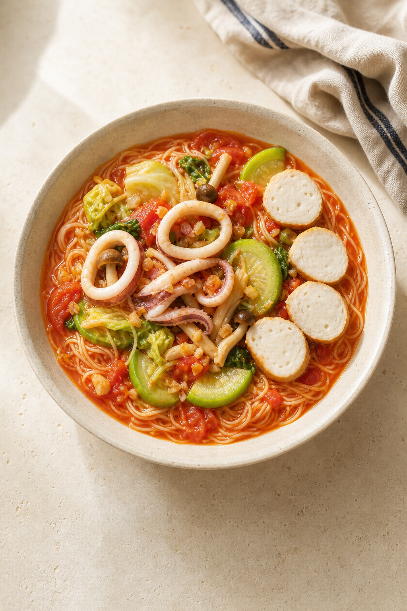

1
先蒸透抽，熟了立刻取出
NN-BS1700水箱加滿約 650 mL；原廠雙面烤盤平面朝上、置上層，透抽單層排開。純蒸氣 100°C，不預熱。
生鮮 6 分／冷藏 7 分／冷凍先半解凍拆散後 9 分。全白不透明、最厚處 70°C 即取出。
用台灣細麵代替義大利麵。透抽交給蒸氣，番茄醬交給 IH，海鮮嫩、醬汁濃、麵條不糊。

水箱加滿約 650 mL；原廠雙面烤盤平面朝上、置上層，透抽單層排開。純蒸氣 100°C，不預熱。
生鮮 6 分／冷藏 7 分／冷凍先半解凍拆散後 9 分。全白不透明、最厚處 70°C 即取出。
中大火依序炒鴻禧菇 2 分、絲瓜＋白菜梗 2 分、白菜葉 1 分，盛出。中小火炒蒜 45–60 秒。
加入番茄、80 mL 水及冷凍花枝丸；小火加蓋留縫 8–10 分，丸子達 74°C 後切半。不蓋鍋收汁約 5 分。
以 1.5–2 L 水煮麵；若包裝標示 2.5–3.5 分，先煮 1.5–2.5 分。保留 150 mL 煮麵水，瀝乾後不沖水、不拌油。
麵＋醬＋60–80 mL 煮麵水，中火快速拌 45–60 秒；加入蔬菜和透抽再拌 30 秒。關火靜置 1 分鐘後分盤。